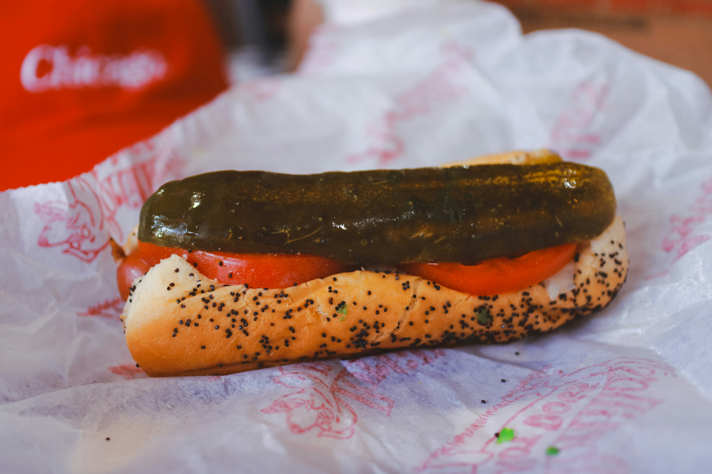
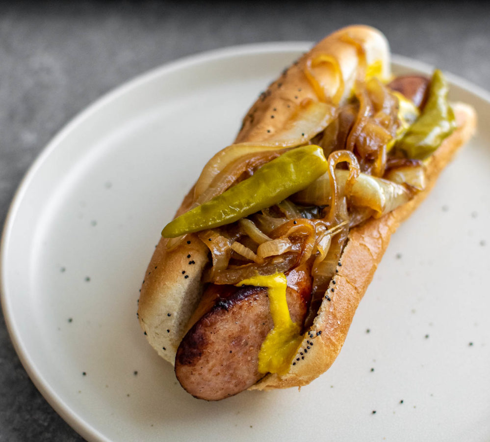
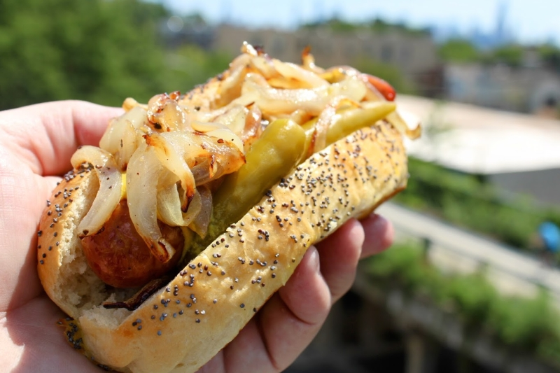

Chicago Dog vs. Maxwell Street Polish
Overview
In Chicago, encased meats aren’t just food—they’re identity. The Chicago-Style Hot Dog is the city’s most famous export, a bright, garden-loaded symbol of pride. The Maxwell Street Polish, meanwhile, is its gritty, smoky, late-night cousin. Both are legendary, both beloved, and both represent two very different sides of Chicago’s culinary soul.
At a Glance: The Rivalry
| Feature | Chicago-Style Hot Dog | Maxwell Street Polish |
|---|---|---|
| The Meat | All-beef frankfurter (usually Vienna Beef), steamed. | Beef & pork blend, coarse grind, grilled or deep-fried. |
| The Bun | Steamed poppy seed bun. | Plain, sturdy steamed or toasted bun. |
| Toppings | Mustard, neon relish, onions, tomato, pickle spear, sport peppers, celery salt. | Mustard, a mountain of grilled onions, sport peppers. |
| Flavor Profile | Snap, crunch, bright, vinegary, garden-fresh. | Smoky, garlicky, juicy, sweet from the onions. |
Chicago-Style Hot Dog: “Dragged Through the Garden”
The History
Often called a “Depression Sandwich,” the Chicago Dog emerged during the Great Depression. German and Austrian immigrants brought the frankfurter to the city, but it was the Maxwell Street vendors who perfected the formula—piling on vegetables so a nickel could buy a full meal. The dog became a symbol of affordability, ingenuity, and Chicago’s immigrant roots.
What Makes It Unique
- The Build: A full “salad” of toppings layered with precision.
- The Snap: A natural-casing Vienna Beef dog that pops when you bite it.
- The No-Ketchup Rule: Tomato wedges already provide sweetness—ketchup overwhelms the spices.


Top Recommended Spots
- Gene & Jude’s (River Grove): A purist’s paradise—no ketchup, no seats, just perfect dogs and fresh-cut fries.
- Superdawg Drive-In (Norwood Park): Iconic rooftop mascots and a proprietary “Superdawg” served in a blue box.
- Portillo’s (Multiple Locations): The most accessible, consistent version for newcomers.
Maxwell Street Polish: “Smoky, Garlicky, Legendary”
The History
The Maxwell Street Polish was born in 1939 when Jim Stefanovic, a Macedonian immigrant, took over a hot dog stand and introduced a larger, spicier sausage. It quickly became a staple for Chicago’s massive Polish community and the workers of the nearby meatpacking district. Its reputation grew through late-night crowds, street vendors, and the unmistakable smell of grilled onions.
What Makes It Unique
- The Sausage: Coarse, garlicky, smoky, and deeply satisfying.
- The Onions: A massive pile of sweet, greasy grilled onions is non-negotiable.
- The Bite: Juicy, bold, and unapologetically messy.


Top Recommended Spots
- Jim’s Original (University Village): The birthplace of the Maxwell Street Polish—best enjoyed at 2 AM under the expressway.
- Portillo’s: A reliable, widely available version for newcomers.